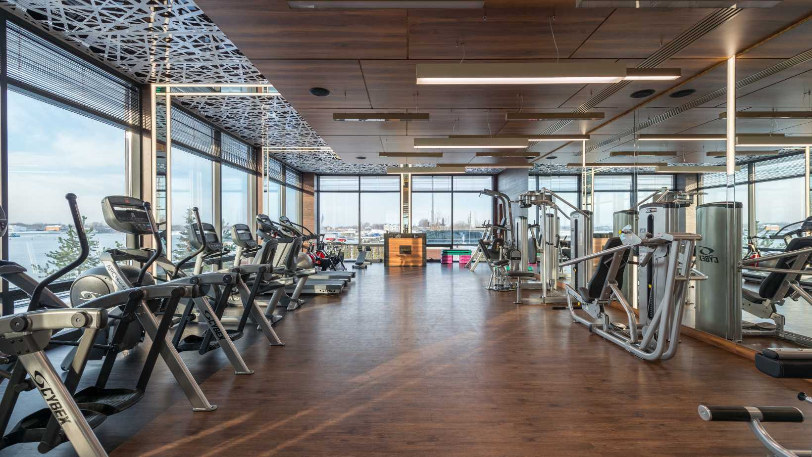

Rólunk
Örömmel üdvözlöm, és köszönöm, hogy ellátogatott a weboldalunkra! Engedje meg,
hogy bemutatkozzam: [Név], okleveles gyógytornász vagyok többéves szakmai
tapasztalattal a mozgásszervi problémák kezelése és a rehabilitáció területén.
Célom, hogy pácienseim számára személyre szabott, hatékony és biztonságos
kezeléseket nyújtsak, melyek segítenek visszaállítani mozgásuk szabadságát és
javítani az életminőségüket. Munkám során kiemelt figyelmet fordítok arra,
hogy a legmodernebb terápiás módszereket alkalmazzam, mindemellett pedig
pácienseim teljes testi-lelki felépülésére koncentrálok.

Rendelő
Üdvözöljük [Rendelő neve] magán gyógytorna rendelőjében, ahol személyre
szabott, professzionális terápiás szolgáltatásokkal várjuk pácienseinket.
Rendelőnkben a legmodernebb eszközökkel és módszerekkel segítünk a
mozgásszervi problémák enyhítésében, a fájdalom csökkentésében és a
gyorsabb felépülésben. Célunk, hogy minden páciensünk visszanyerje
mozgásszabadságát és életminőségét.